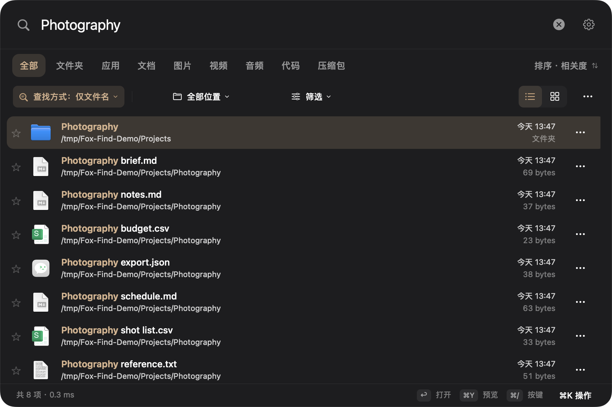

文件名、应用、熟悉的位置。
输入名称或拼音首字母，按目录、类型、日期和大小缩小范围。也可以试试 ext:pdf，或保存常用搜索。
私有发布预览 · 官网尚未对外部署
记得一半的文件名，PDF 里的一句话，截图里的几个字。在你的 Mac 上，把它们找回来。
0.8.3 预览版 · Apple 芯片 · macOS 14+ 部署目标
Ad-hoc 签名，尚未 Apple 公证。安装前请看这里。

日常找东西，一个原生窗口就够。先搜索文件名，再为你选择的文件夹开启内容搜索。
输入名称或拼音首字母，按目录、类型、日期和大小缩小范围。也可以试试 ext:pdf，或保存常用搜索。
添加内容文件夹，搜索 PDF、支持的文档和图片中提取出的文字。OCR 在本机处理，索引进度告诉你哪些已经就绪。
输入描述，或选择参考图找相似图片。需要单独下载约 865 MB 模型并建立目录索引；相关性因素材而异。
预览、在 Finder 中显示、收藏，或拖到其他应用。右键或按 ⌘ K，查看当前文件可用的操作。
无需账号，没有云端推理。所选文件夹的内容，在这台 Mac 上处理。
本地处理也需要说明边界：内容缓存保存未单独加密的提取文字，使用当前用户专属的文件权限保护。
手动下载模型会连接 Hugging Face/CDN；打开网页结果使用浏览器。此版本没有集成统计 SDK，也未启用自动更新服务。
阅读完整隐私说明 ↗已有可用功能，仍需更多 Mac 验证。安装前，这些信息值得知道。
仅面向 Apple 芯片，最低部署目标 macOS 14。发布验证在 macOS 27.0.1 上完成，其他设备与较早系统尚待验收。预览版为 ad-hoc 签名，没有 Apple 公证，首次打开可能被系统拦截。请先阅读 Apple 应用安全说明，再决定是否允许，也可从源码构建。
文件名与文件内容是独立索引。请在「内容搜索」添加目录、允许权限并等待索引。未下载的云文件、不可读/加密文件及部分格式会跳过。语义搜索还需要模型下载完成，并出现已索引的语义片段。
不是。Fox Find 基于 Oil Find 公开的 MIT 核心独立维护，不包含其私有 Pro 模块或原厂 App 二进制。内容搜索由本分支独立实现、集成。原项目及其作者不为本分支背书。
源码采用 MIT 许可，此预览版不需要付费激活。后续自愿赞助用于本分支维护，不解锁功能，也不代表购买原项目授权。目前爱发电入口尚未启用，欢迎先提交问题、翻译或兼容性反馈。
拿真实任务试一试，告诉我们哪里还不顺手。
让每天找文件这件事，轻松一点。
收款暂未开启。支持说明 · 如果用得顺手，欢迎 Star。